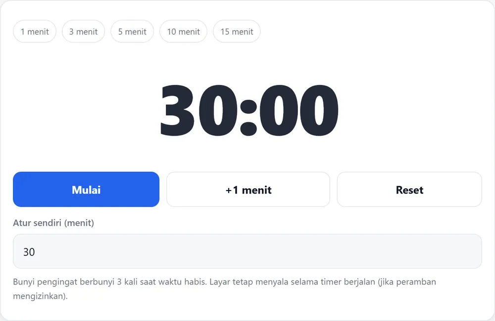

Beranda › Timer hitung mundur online
Timer hitung mundur online yang terbaca dari belakang kelas
Timer di ponsel bisa menghitung mundur, tetapi angkanya terlalu kecil untuk dilihat siswa di baris belakang. Akibatnya guru harus mengumumkan sisa waktu berulang kali, dan itu memotong konsentrasi kelas. Timer yang ditampilkan penuh di layar menyelesaikan masalah itu: semua siswa melihat waktu yang sama, tanpa perlu ditanya.
Buka timer kelas preset 1–30 menit, angka besar
Hitung mundur dan stopwatch: bedanya
| Kebutuhan | Alat yang tepat | Contoh pemakaian |
|---|---|---|
| Batas waktu yang diketahui | Hitung mundur | Ujian 30 menit, diskusi 10 menit |
| Mengukur berapa lama sesuatu berjalan | Stopwatch | Lama presentasi, waktu bersih-bersih |
| Menandai pergantian kegiatan | Hitung mundur pendek | Transisi 2 menit antar kelompok |
Empat pemakaian yang paling sering
- Ujian dan ulangan. Tiga puluh menit, angka besar, dengan bunyi pengingat di lima menit terakhir.
- Kerja kelompok. Sepuluh menit per sesi; ketika waktu habis, kelompok berpindah atau presentasi.
- Presentasi siswa. Tiga menit per siswa; sisa waktu terlihat tanpa guru harus memotong pembicaraan.
- Istirahat terarah. Lima menit setelah istirahat panjang, supaya kelas kembali tenang sebelum materi dimulai.
Cara memakai timer ini
- Pilih preset (1, 3, 5, 10, atau 15 menit), atau isi menit sendiri sampai 30 menit.
- Tekan Mulai. Angka menghitung mundur penuh di layar dan judul tab ikut menampilkan sisa waktu.
- Biarkan layar menyala — timer memakai Wake Lock supaya layar tidak mati saat dipakai di kelas.
- Saat waktu habis, bunyi pengingat berbunyi tiga kali. Tekan Reset untuk kegiatan berikutnya.
Coba timernya di sini

Kenapa ukuran angka penting
Siswa yang duduk di belakang sering tidak bisa membaca angka kecil, sehingga mereka bertanya berulang kali dan mengganggu kelas. Dengan angka sebesar mungkin, pertanyaan “berapa menit lagi?” hilang, dan guru bisa memakai waktunya untuk hal lain. Ini juga berlaku saat timer dipakai di aula atau ruang serbaguna, tempat proyektor biasanya lebih jauh dari penonton.
Kenapa 30 menit sering dipakai untuk ujian
Tiga puluh menit cukup untuk 20–25 soal pilihan ganda atau dua soal uraian pendek, dan cukup singkat untuk dijalankan dalam satu jam pelajaran bersama pembukaan dan penutupan. Untuk ulangan yang lebih panjang, jalankan dua sesi 30 menit dengan jeda satu menit — jeda itu sekaligus memberi siswa kesempatan memeriksa jawaban bagian pertama.
Kalau tidak ada proyektor
Timer tetap berguna di laptop yang diletakkan di meja guru, atau di TV kelas bila tersedia. Yang penting, posisinya menghadap siswa dan bukan menghadap guru. Bila hanya ada ponsel, letakkan di depan kelas dengan layar penuh — angka besar masih terbaca sampai baris ketiga atau keempat.
Pertanyaan yang sering diajukan
Berapa lama maksimal timer ini?
Tiga puluh menit lewat input menit, dan preset cepat untuk 1, 3, 5, 10, dan 15 menit. Untuk kegiatan lebih panjang, jalankan dua sesi.
Apakah timernya tetap berjalan saat layar mati?
Timer meminta layar tetap menyala (Wake Lock) selama berjalan, sehingga hitungan tidak terputus saat diletakkan di meja guru.
Apakah ada bunyi saat waktu habis?
Ada. Bunyi pengingat berbunyi tiga kali. Volume mengikuti pengaturan perangkat.
Apakah bisa dipakai tanpa internet?
Bisa, setelah halaman terbuka satu kali. Berkas timer tersimpan di peramban sehingga tetap jalan saat sinyal sekolah lemah.